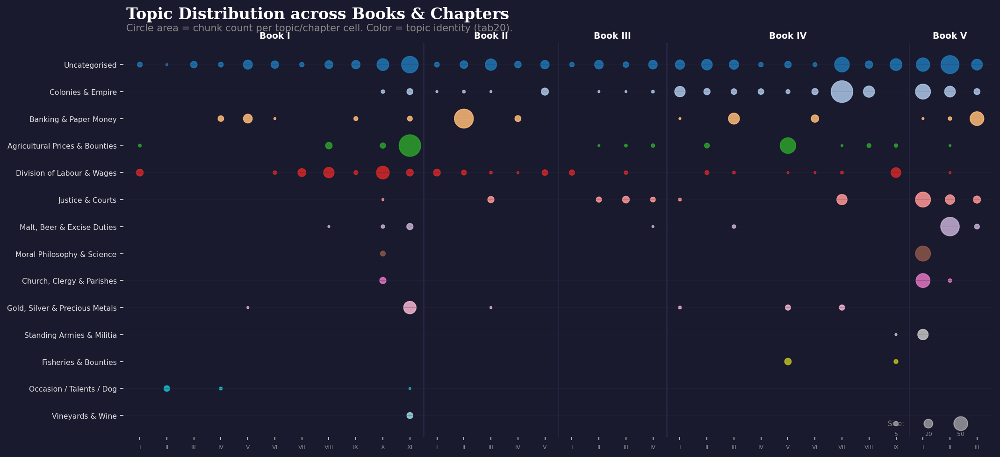
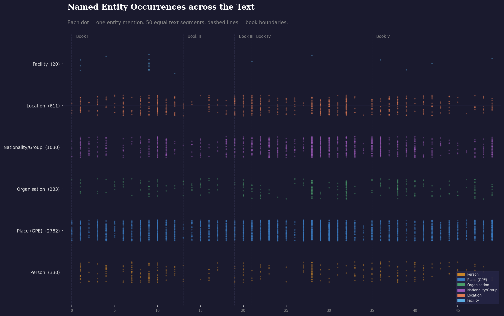
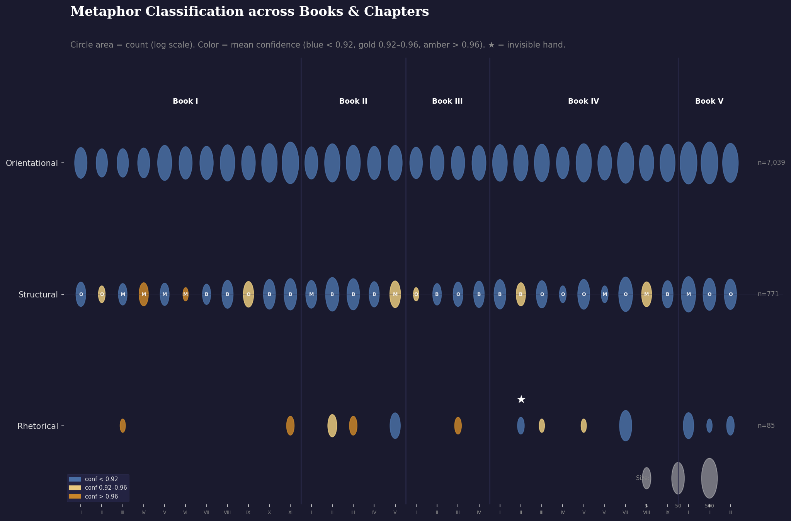
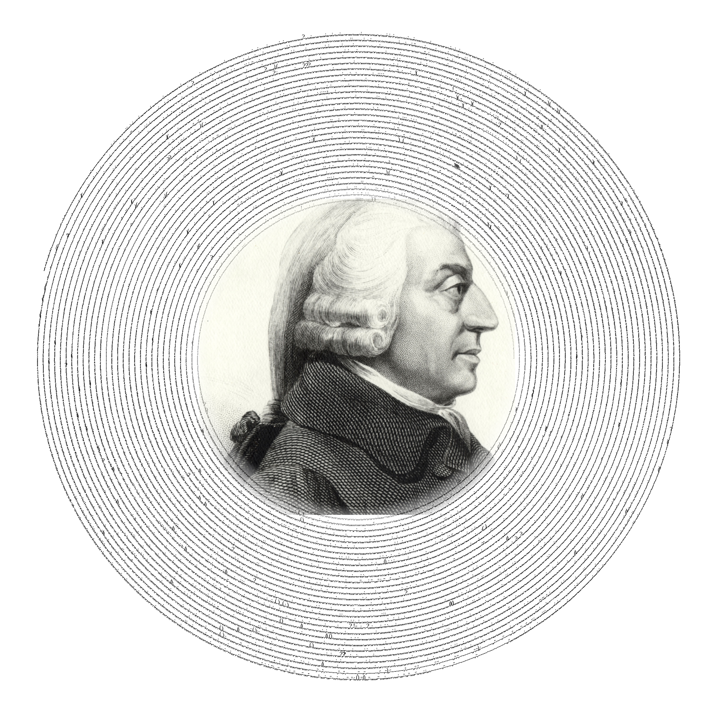

Adam Smith, 1776
250th Anniversary Digital Edition
Scottish moral philosopher and pioneer of political economy. An Inquiry into the Nature and Causes of the Wealth of Nations, published on 9 March 1776, laid the foundations of classical economics. This digital edition applies modern NLP—topic modelling, named entity recognition, PageRank, and metaphor detection—to reveal patterns invisible to the naked eye.
“By preferring the support of domestic to that of foreign industry, he intends only his own security; and by directing that industry in such a manner as its produce may be of the greatest value, he intends only his own gain, and he is in this, as in many other cases, led by an invisible hand to promote an end which was no part of his intention.”
85 moments where Smith reaches beyond convention to figure his economic world — from the invisible hand to the great wheel of circulation.

Distribution of 13 discovered topics across all books and chapters.

Where Smith mentions people, places, and organizations throughout the text.

Orientational, structural, and rhetorical metaphors by chapter. Star marks the invisible hand.

The rhythm of Smith's prose — every punctuation mark plotted in a spiral.